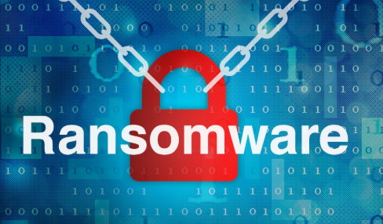
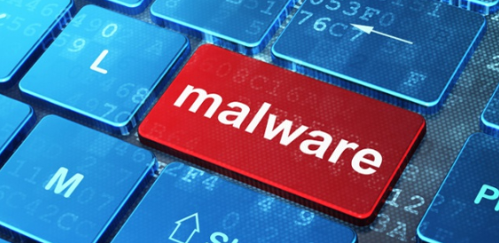
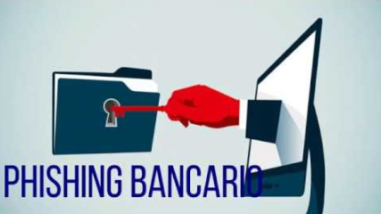

Constantemente surgen nuevos desafíos y amenazas informáticas que pueden acabar afectando a las empresas. La seguridad informática no es simplemente una opción, o un extra de confianza, sino cada vez más una obligación de las compañías que de verdad quieren proteger sus datos y los de sus clientes.
Si nos fijamos en las últimas noticias, las amenazas a la seguridad informática se incrementan a medida que las nuevas tecnologías avanzan. Por esto, no nos extrañe que en el 2018 estemos viendo problemas de seguridad informática relacionados con el Bitcoin, la inteligencia artificial o wl Internet de las cosas (IoT).
Quizás como pequeña y mediana empresa piensas que éstas cosas te quedan muy lejos. Pero lo cierto es que precisamente son los sistemas informáticos más vulnerables los que los ciberdelincuentes utilizan para sus operaciones.
Veamos por ejemplo algunas amenazas a la seguridad informática contra las que debes estar protegido.
RANSOMWARE
De todos es conocido ya el famoso virus Wannacry, un ransomware que secuestra tu ordenador y te pide un rescate para que puedas obtener la clave de cifrado.
Lo cierto es que este tipo de virus informático, sin tener el efecto mediático que tuvo durante el año pasado, ha sido una amenaza informática durante muchos años. Una de las razones por las que este tipo de virus informático te puede afectar es por utilizar equipos informáticos con sistemas operativos sin actualizar y con vulnerabilidades ya conocidas.

MALWARE SIN ARCHIVOS
Cada vez estamos más prevenidos contra el malware. Evitamos descargar archivos extraños y remitentes desconocidos de nuestro correo electrónico. Procuramos buscar siempre las páginas oficiales para descargar los programas, en lugar de utilizar redes p2p. Utilizamos también antivirus para poder trabajar con más comodidad.
Pero cuidado, existe un tipo de malware, el malware sin ficheros, que resulta difícil de detectar. Es un tipo de código malicioso diseñado para no escribirse en el disco duro y trabajar desde la memoria, como por ejemplo la RAM. El malware sin fichero no necesita de dichos archivos en el disco duro, por lo que los sistemas de protección tradicionales no son capaces de detectarlo. Esto hace que resulte mucho más difícil defenderse de ellos, ya que este tipo de infecciones son mucho más resilientes y difíciles de controlar

TROYANOS FINANCIEROS
Los troyanos financieros son piezas de malware que los ciberlincuentes utilizan para monetizar sus actividades. Los ciberdelincuentes utilizan sistemas de ataque avanzados orientados a realizar transacciones ocultas y atacar a diferentes bancos. Aunque la banca móvil ha hecho que todo resulte mucho más seguro y han caído bastante en los últimos años, los delincuentes siguen utilizando los troyanos financieros para recolectar dinero.
ATAQUES A TUS PROGRAMAS EN LA NUBE Y PROVEEDORES
Podemos tener sistemas informáticos seguros, pero ¿qué pasa con nuestros proveedores? ¿y con la información que almacenamos en la nube? Los ciberdelincuentes también aprovechan este 2018 para atacar las tecnologías que utilizan las empresas y profesionales que se relacionan con tu compañía: proveedores, asociaciones, personas clave.
Entidades y profesionales que pueden tener datos sobre tu negocio almacenados, pero con sistemas informáticos más vulnerables. Si un ciberdelincuente quiere atacar a una gran empresa, buscará la forma de atacar a los elementos más débiles de la cadena de suministros.
ATAQUES PHISING BANCARIOS
Cuidado con los mensajes de bancos que recibís por correo electrónico, ya que no siempre son fiables. El phising bancario se ha puesto de manifiesto este año con una campaña que ha suplantado al BBVA para solicitar datos de usuarios.
Las empresas deben estar muy al tanto de este tipo de cosas. La manera más fácil en la que se cuela un malware, se nos roban datos personales o incluso se realiza una estafa es aprovechando el eslabón más débil de nuestra red de seguridad: el ser humano.
Los ciberdelincuentes utilizan la ingeniería social han demostrado ser muy efectivos y lucrativos, mucho más cuando vienen revestidos de una apariencia de institucionalidad. El phishing no duda en incluir logotipos o incluso dominios web parecidos a los de la empresa a la que quieren suplantar para recoger tus datos.
